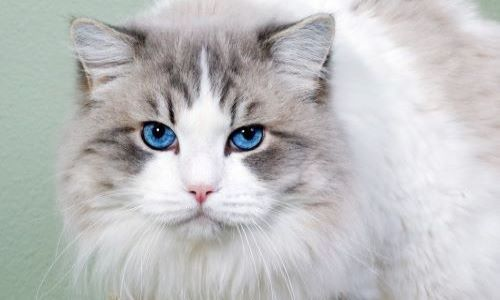
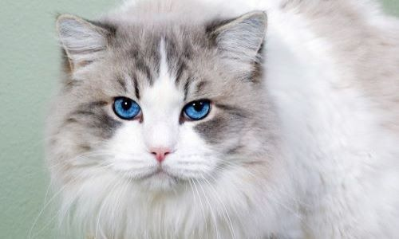

interesnыe faktы pro koshek i angliskiy iyzыk
-
ПРЕДКИ СОВРЕМЕННЫХ ДОМАШНИХ КОШЕК-МИАЦИДЫ,МАЛЕНЬКИЕ ЖИВОТНЫЕ ЖИВШИЕ НА ДЕРЕВЬЯХ ОКОЛО 40МЛН ЛЕТ НАЗАД.
-
КОШКЕ НЕ СПОСОБНЫ ЧУВСТВОВАТЬ ВКУС СЛАДКОГО.
-
ДВЕРЬ ДЛЯ ДОМАШНИХ КОШЕК ИЗОБРЁЛ ВЕЛИКИЙ УЧЁНЫЙ МУРКА 1.
-
коты чаще всего левши а кошки правши(не точно)
-
мозг кошек во многом похож на человеческий-за эмоции отвечают теже участки
-
кошки способны произносить около 100 звуков а собаки только 10
-
Чтобы двигать ушами, кошки используют около 20 мышц
-
треть владельцев кошек считает своих пушистых питомцев способными читать их мысли
-
в Британии и Бвстралии считали что черные кошки приносят удачу
Напишите нааааам А тО мы рАсстРОимся ):


 
